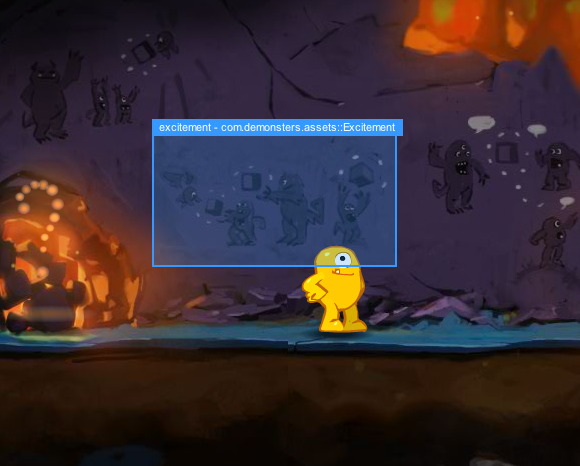

7. Highlight & inspect
Another new feature that has been introduced in version 3 of the Monster Debugger is the highlight & inspect mode. Although you can find almost every aspect of your application in the tree, sometimes it can be hard to find a specific item even though you can easily spot it in in your application on your screen. In that case the highlight & inspect function can help you out.
By clicking on the highlight & inspect in the Monster Debugger, you can toggle the function in your own application. By navigating with the mouse, the Monster Debugger will highlight DisplayObjects in your application as you hover over them. By clicking on an item, you set that DisplayObject as the target for the Monster Debugger.